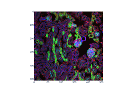

Longer examples and demonstrations#



Interact with 3D images (of kidney tissue)
Interact with 3D images (of kidney tissue)
Use pixel graphs to find an object’s geodesic center
Use pixel graphs to find an object's geodesic center


Comparing edge-based and region-based segmentation
Comparing edge-based and region-based segmentation


Measure fluorescence intensity at the nuclear envelope
Measure fluorescence intensity at the nuclear envelope

Face classification using Haar-like feature descriptor
Face classification using Haar-like feature descriptor